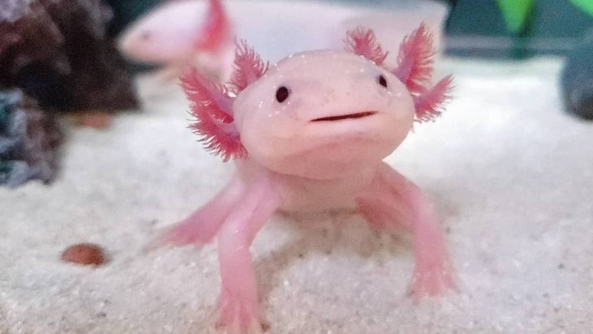
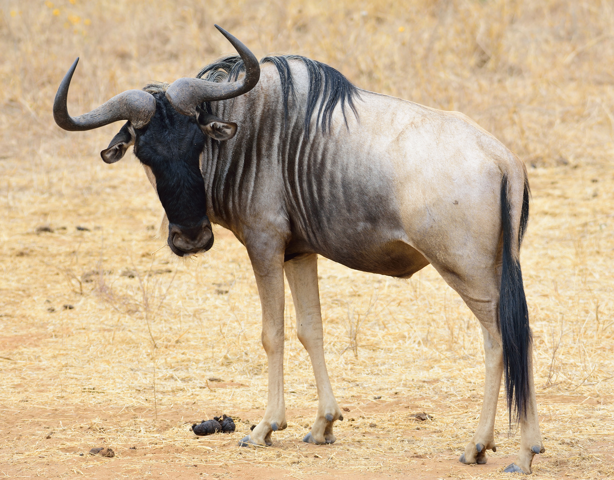

El ajolote: el Peter Pan de las salamandras
SITUACIÓN
El ajolote es conocido como el Peter Pan de las salamandras.
Si bien la mayoría de los anfibios superan su fase acuática para comenzar su vida en tierra, el ajolote conserva en gran parte sus características larvales y pasa su vida adulta en el agua. Sin embargo, continúa creciendo y llega alcanzar hasta 30 cm de largo.

Capibara
DATOS GENERALES
-
Nombre científico: Hydrochaeris hydrochaeris
-
Clase: Mammalia
-
Orden: Rodentia

Ñu
El ñu es un miembro de la familia de los antílopes, aunque su complexión pesada y sus cuartos delanteros desproporcionadamente grandes hacen que se parezca ms a los bovinos. Los ñus pueden alcanzar las 2,5 metros de altura y 1,5 hasta los hombros, y pesar alrededor de 275 kilogramos. Tanto los machos como las hembras presentan cuernos.
Su hábitat extiende por las llanuras herbosas y bosques poco densos del centro, sur y este de frica, especialmente en el Serengueti, en Tanzania y Kenia. Se desplazan en grandes manadas y son activos de da y de noche, paciendo constantemente.

Cantidad de Ñus que emigran a estos países, por año:
| País/año |
2017 |
2018 |
2019 |
2020 |
2021 |
2022 |
| Argentina |
7 |
62 |
15 |
20 |
50 |
0 |
| Chile |
3 |
4 |
3 |
3 |
2 |
0 |
| Perú |
4 |
3 |
2 |
3 |
1 |
0 |
| México |
8 |
6 |
5 |
6 |
3 |
6 |